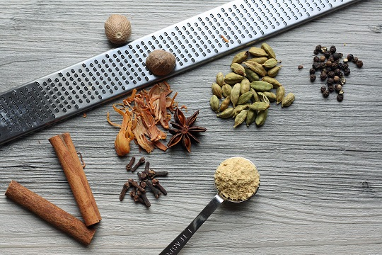

Masala Chai is a tea beverage from India made by boiling black tea in milk and water with a mixture of herbs and spices. These spices can be ground into powder form which can be then be used to make a Masala Chai latte. Whichever form you prefer we have it at Chai There!
For more information about the history of chai you can click this link
